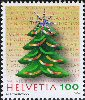

メニュー画面に戻る
メニュー画面に戻る
 画像を見る
画像を見る
 ショッピングカートを利用する
ショッピングカートを利用するLIST 2009/12

＜略号＞
BK=切手帳、S/S=小型シート、(シ)=シール式、CEPT=「EUROPA」シリーズ、□=無目打
( )内の数字は、種類の数
全体に取り消し線のあるものは、売り切れです。(2021.10.07)
品番のみに取り消し線があるものは、入荷待ちです。
青文字の品番は、再入荷（在庫僅）です。
最近売り切れの時期が早まっております。
ご注文はおはやめにどうぞ。
★ 恐れ入りますが1000円未満のご注文はお受けできません ★
当店の価格はすべて【税込】です。
| 品番 | 品名 | 単価 |
|---|---|---|
| ＯＺ １ | 国連 先住民族６連S/S (3) | 3110 |
| ＯＺ ２ | 国連 普通＄１非暴力の日 (1) | 190 |
| ＯＺ ３ | アメリカ 自然⑪海藻の森10連（シ） | 890 |
| ＯＺ ４ | アメリカ クワンザ祭新図案（シ） (1) | 90 |
| ＯＺ ６ | アメリカ Ｘマス名画20枚（シ）平ＢＫ | 1780 |
| ＯＺ ７ | アメリカ Ｘマス人形（シ）平ＢＫ | 1780 |
| ＯＺ ８ | アメリカ Ｘマス人形縮小（シ）平ＢＫ | 1570 |
| ＯＺ ９ | アメリカ ＸマスＢＫ３点の単片 (9) | 840 |
| ＯＺ１１ | オーランド Ｘマス子供 (2) | 410 |
| ＯＺ１２ | オルダニー シャーロック・ホームズ (6) | 960 |
| ＯＺ１５ | オーストリア 近代絵画カイザー (1) | 120 |
| ＯＺ１６ | オーストリア ローカル鉄道120年 (1) | 220 |
| ＯＺ１７ | オーストリア Ｘマス名画、風景 (2) | 270 |
| ＯＺ１８ | オーストリア 博物館10年近代画 (1) | 120 |
| ＯＺ１９ | オーストリア お菓子パーマーズ (1) | 120 |
| ＯＺ２０ | オーストリア 守護神レオポルド凹 (1) | 120 |
| ＯＺ２１ | オーストリア ダーウィン３連凹 S/S | 370 |
| ＯＺ２２ | ブルガリア CEPT2009天体 S/S | 1000 |
| ＯＺ２３ | 中国 京杭大運河 S/S | 210 |
| ＯＺ２４ | 中国 年賀切手文字 (1) | 50 |
| ＯＺ２５ | 中国 音楽タブつき (1) | 50 |
| ＯＺ２６ | 中国 第11回国体 (2)＋S/S | 220 |
| ＯＺ２７ | 中国 建国60年 (4)＋S/S | 400 |
| ＯＺ２８ | 中国 建国閲兵式 (4) | 190 |
| ＯＺ３１ | クロアチア 極地と氷河保護 S/S | 420 |
| ＯＺ３２ | キプロス CEPT2009星座 (2) | 280 |
| ＯＺ３３ | 北キプロス CEPT2009天体 ２連 | 270 |
| ＯＺ３４ | チェコ 国歌175年凹 (1) | 160 |
| ＯＺ３５ | チェコ 昔のストーブ凹 (2) | 370 |
| ＯＺ３６ | チェコ 旅行家エリアソバ凹 (1) | 280 |
| ＯＺ３７ | チェコ 自由と民主の日50年 (1) | 220 |
| ＯＺ４２ | スロバキア 大統領金箔＋タブ凹 S/S | 260 |
| ＯＺ４４ | デンマーク 気候の変動凹 (2) | 480 |
| ＯＺ４５ | デンマーク Ｘマス遊び（シ） (4) | 1000 |
| ＯＺ４６ | デンマーク 名画シリーズ (1) | 420 |
| ＯＺ４７ | フエロー 地質構造 ６連S/S | 2120 |
| ＯＺ４９ | フィンランド アマリリスの花（シ） (1) | 210 |
| ＯＺ５０ | フランス 普通 (5)＋コイル(1)（シ） | 1950 |
| ＯＺ５２ | ドイツ ユースホステル100年 (1) | 180 |
| ＯＺ５３ | CEPT イギリス 偉大な英国人 (10) | 1190 |
| ＯＺ５４ | イギリス ロンドン５輪 (10) | 1190 |
| ＯＺ５５ | イギリス Ｘマス（シ）(7)＋普通糊S/S | 2700 |
| ＯＺ５８ | グアンジー Ｘマス教会夜景 (12) | 1480 |
| ＯＺ５９ | 香港 中国60年扇型 (6)＋S/S(2) | 1020 |
| ＯＺ６０ | アイスランド 国立図書館 S/S | 260 |
| ＯＺ６１ | アイスランド 海鳥 (2) | 400 |
| ＯＺ６２ | アイスランド Ｘマスステンドグラス（シ）(2) | 330 |
| ＯＺ６３ | アイスランド 木造教会 (1) | 330 |
| ＯＺ６４ | インドネシア 鳥美 (6)＋S/S | 700 |
| ＯＺ６７ | 韓国 テコンドー競技場 (1) | 50 |
| ＯＺ６８ | ラトビア バウスカ城400年 (1) | 150 |
| ＯＺ６９ | ラトビア 建国90年地図と紋章 (1) | 120 |
| ＯＺ７０ | ラトビア 国立博物館 (1) | 140 |
| ＯＺ７１ | ラトビア 金メダルのストロンベルグ (1) | 90 |
| ＯＺ７２ | リヒテン 現代建築 (3) | 1110 |
| ＯＺ７３ | リヒテン Ｘマス (4) | 790 |
| ＯＺ７４ | リヒテン 保存建築（シ） (3) | 210 |
| ＯＺ７７ | マン島 SEPAC ノックスの風景画 (6) | 1350 |
| ＯＺ７８ | マン島 汽船会社２連 S/S | 910 |
| ＯＺ７９ | モナコ 国際マジックショー (1) | 160 |
| ＯＺ８０ | モナコ Ｘマス凹３色 (1) | 130 |
| ＯＺ８１ | モナコ SEPAC風景 (1) | 190 |
| ＯＺ８２ | モナコ ビッグベン時計塔凹 (1) | 220 |
| ＯＺ８４ | オランダ 女王44c10枚（シ）平ＢＫ | 1200 |
| ＯＺ８５ | オランダ 女王44c10枚（シ）平ＢＫの単片 | 120 |
| ＯＺ８６ | オランダ領アンチル 蝶 (12)連 | 3650 |
| ＯＺ８７ | ノルウェー 盲導犬点字入 (1) | 250 |
| ＯＺ８８ | ルーマニア 極地と氷河保護 (2)＋S/S | 1370 |
| ＯＺ９０ | ロシア セレブリアコフの絵画 (2） | 150 |
| ＯＺ９２ | ロシア 青年の年 (1) | 70 |
| ＯＺ９３ | シンガポール 青年５輪2010 (4) | 520 |
| ＯＺ９４ | 南ジョージア 探検家シャックルトン、船 (12) | 4910 |
| ＯＺ９５ | スウェーデン Ｘマスギフト（シ） ＢＫ | 1410 |
| ＯＺ９８ | スウェーデン 冬の動物凹 ＢＫ | 1840 |
| ＯＺ９９ | スウェーデン 冬の動物凹 ＢＫの３連 | 920 |
| ＯＺ１０１ | スイス 児童福祉募金（シ） (4) | 880 |
| ＯＺ１０２ | スイス 児童福祉募金２種各６枚（シ） ＢＫ | 2720 |
| ＯＺ１０４ | スイス Ｘマスサンタ帽ほか (3) | 500 |
| ＯＺ１０６ | スイス バンクーバー冬パラリンピック (1) | 210 |
| ＯＺ１０８ | タイ 国際電気通信委員会 (1) | 30 |
| ＯＺ１０９ | タイ 陸軍軍医部隊110年 (4) | 120 |
| ＯＺ１１０ | タイ 新年の花 (4)＋S/S | 240 |
| ＯＺ１１１ | タイ 伝統金属工芸品 (4)＋S/S | 240 |
| ＯＺ１１２ | ベトナム 観賞魚 S/S | 220 |
ショッピングカートを利用する 店主の『雑記帳』を開いてみる
メニュー画面に戻る
店主の『雑記帳』を開いてみる
メニュー画面に戻る